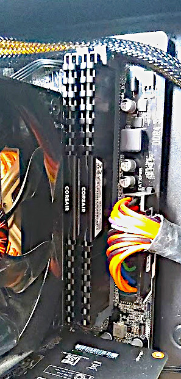

This is the CPU of my PC. It is a Ryzen 7 1700X. This is a first-generation CPU from AMD that specializes in multi-processing and has a decent clock rate. I chose this CPU because it is more affordable than the Intel counterpart and can handle multiple processes at the same time.
It is covered by the Cooler Master CPU fan that cools the chip. The fan consists of the metal part called a heatsink and a plastic fan to its side to cool the heatsink. The heatsink makes contact with the CPU and cools it.
This is the storage bay for my storage drives. It contains a Western Digital Blue 2TB 5400 RPM hard drive and a 256GB Intel Solid State Drive. The hard drive is used to store heavy games and games I don't play much while the solid state drive is used to store small games and games I play frequently.
I chose the 2TB drive because it was a good deal for the amount of storage and I wasn't interested in loading games quickly with the drive. I chose my 256GB to give me just enough space to use as a boot drive but also to store the few games I play frequently.
This is the graphics card of my PC. It is a Radeon RX 570. I chose this graphics card because it is more affordable that the Nvidia counterpart and can play games at 1080p 60 frames per second, which was the minimum quality I was looking for.
However, this graphics card wastes a lot of power and can't play games at higher definitions. If I were to upgrade a part of my PC, it would be this. I would probably upgradede my GPU to a better Nvidia graphics card.
This is the power supply of my PC. It is a Thermaltake TR2 500 watt Bronze. I chose this power supply because it was on a great deal. I did not care for modular or semi-modular power supplies because most of the cables would be tucked away in the back of the case. I was more interested in saving money than for convenience.
This power supply also has 80 plus bronze certification, which is a well-regarded certification for power supplies. This means that the power supply is less likely to catch on fire and has been rigorously tested.

These are the RAM sticks for my PC. They are Corsair Vengeance 2X8GB DDR4. I chose this amount of RAM because it was just enough to handle multiple programs at the same time but also not so much that it would be overkill. This amount of RAM is an affordable amount that suits my needs.
This is the monitor for my PC. It is a Dell S2419HGF. It is a 1080p 144 Hz monitor that supports AMD FreeSync. The reason why I chose this monitor was because it was affordable while also supporting FreeSync and having a high refresh rate. Usually, FreeSync and high refresh rate monitors would cost a lot more money.
This part would also be something I would upgrade in the future. While the monitor was a good deal, it is very finicky and would not utilize the graphics card I'm thinking of buying to its fullest potential.

This is the keyboard for my PC. It is a generic Chinese keyboard that uses off-brand red switches. The reason I chose this keyboard was because it was affordable and has red mechanical switches. Red switches are usually quieter than other types of switches, which was ideal for me since I still lived with my parents.
Usually, mechanical keyboards would be more expensive than traditional membrane keyboards. I really wanted a mechanical keyboard because they last longer for gaming and are more responsive.
This is the mouse for my PC. It is a Logitech G402. It is a budget gaming mouse. I chose this mouse because it was affordable, had extra buttons, and is very durable. Other gaming mice can get much more expensive for more features, but I just mainly wanted a gaming mouse than won't break on me.
To go back and view the video presentation, please click here.